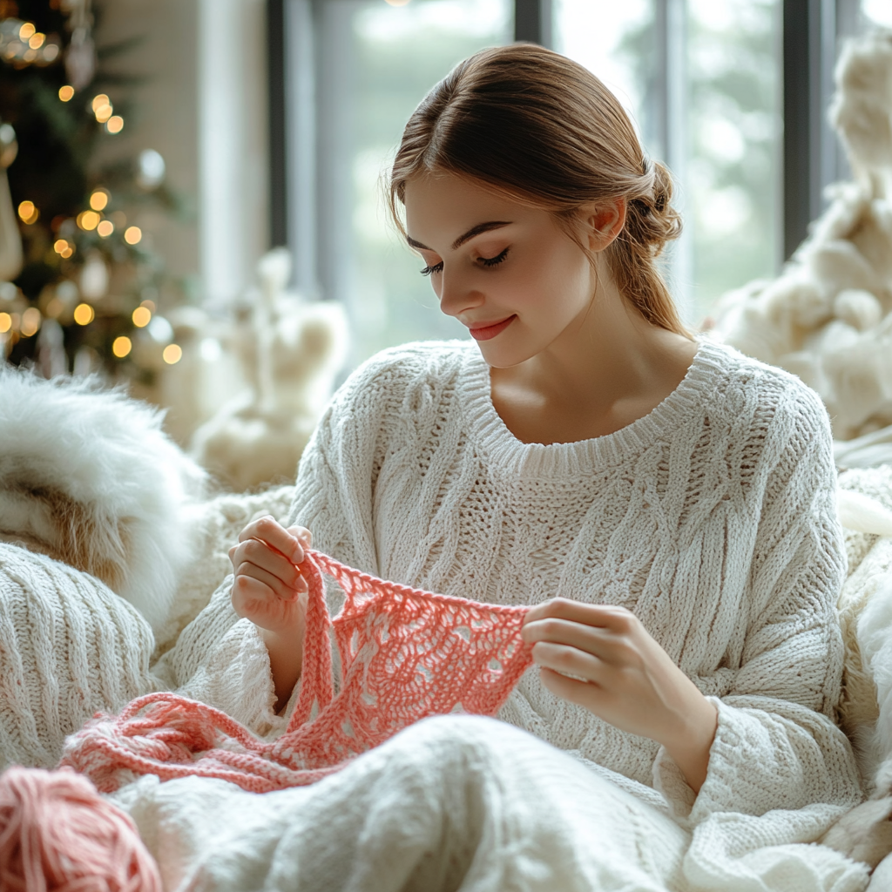

Об авторе
Марина Иванова: история мастерицы
Привет! Меня зовут Марина, и вот уже более 5 лет вязание является не просто моим хобби, а настоящей страстью и частью жизни. Моя история с вязанием началась в детстве, когда я наблюдала, как моя бабушка ловко управлялась со спицами, создавая уютные теплые вещи для всей семьи.
Как всё начиналось
В 12 лет я связала свою первую вещь - простой шарфик для куклы. Он получился неровным, с дырочками, но именно тогда я почувствовала волшебство превращения клубка пряжи в нечто настоящее, созданное своими руками. С тех пор я не расставалась со спицами и крючком.
Мой путь в вязании
Со временем простые шарфики сменились сложными свитерами, а потом я начала создавать собственные дизайны. Я изучала различные техники: от классического вязания спицами до ирландского кружева крючком, от скандинавских узоров до современных тенденций в текстильном дизайне.
Я закончила курсы дизайна и текстиля, участвовала в выставках рукоделия и даже выиграла несколько конкурсов по вязанию. Но самое ценное для меня - это не награды, а возможность делиться своим опытом с другими.
Почему я провожу вебинары
За годы практики я поняла, что многие начинающие вязальщицы сталкиваются с одними и теми же трудностями: не могут разобраться в схемах, неправильно подбирают пряжу, теряют мотивацию из-за первых неудач. Я сама прошла через все эти этапы и знаю, как важно получить правильные советы в начале пути.
Моя миссия - показать, что вязание доступно каждому. Это не только полезный навык, но и прекрасный способ расслабиться, выразить свою креативность и создать уникальные вещи, которых нет ни у кого другого.
Мой подход к обучению
На своих вебинарах и уроках я стараюсь не просто показать технику, а объяснить принципы, чтобы вы могли понять логику вязания и создавать свои собственные проекты. Я верю, что лучший результат достигается, когда ученик понимает, что и зачем он делает.
Присоединяйтесь к моим вебинарам и откройте для себя удивительный мир вязания! Я буду рада поделиться с вами своими знаниями и опытом.